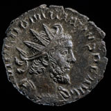
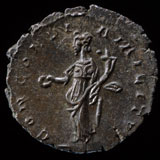

Department of Coins & Medals > news
'Emperor'
Domitianus rewrites history
|  |

|
The discovery of a
coin of a hitherto much disputed rebel Roman 'emperor' - Domitianus looks
set to rewrite history. The coin, part of a hoard, was discovered by Brian
Malin whilst using a metal-detector on farmland at Chalgrove, Oxfordshire
in April 2003.
So little is
known of Domitianus that his existence was doubted by many scholars. The
new discovery makes it certain both that this shadowy claimant to the
Imperial throne existed, and that he mounted a serious challenge for the
position of emperor in the troubled period of the early 270s AD, known
as the 'Gallic Empire.'
The antiquity of this coin of Domitianus is beyond doubt as it came from
a hoard consisting of over 5,000 common Roman coins fused together in
a third century AD pot, which had to be painstakingly separated by British
Museum conservators.
Only two, fleeting references, to Domitianus exist in historical sources but neither identify him as a rebel emperor (called 'tyrants' by the official Roman sources). The Byzantine historian Zosimus records that a certain Domitianus was punished for treason by the Emperor Aurelian (ruled AD 270-275). Another, notoriously unreliable compendium, called the Historia Augusta states that a high-ranking army officer of this name was involved in a military uprising during the same reign. Whilst these two, tantalizingly slight pieces of evidence have tended to be rejected in the past, the new coin provides archaeological evidence that shows these accounts can substantially be accepted. We even have a face to go with the rebel emperor's name (although it is unlikely to have been an accurate portrait given its similarity to Victorinus, his predecessor and Tetricus, his successor).
There is one other
known coin depicting Domitianus in existence, which was found in the Loire
area of France in 1900. Since it was unique and unprecedented the coin
was disputed as a modern hoax. It then disappeared into the collections
of a small museum in western France and has only recently been traced.
The Oxfordshire coin matches the French example and together the coins
provide the final indisputable proof of the existence of Domitianus.
The 'The Gallic Empire' is the name given to the secessionist state that
was created in the aftermath of the Roman Empire's greatest humiliation.
In AD260 the Emperor Valerian was captured alive by the Persians. He was
used as a living footstool by the Persian king and upon his death was
stuffed and displayed in a Zoroastrian temple. This was the cue for Gaul
(the area comprising modern France and the Rhineland) to revolt in order
to look after their own security; taking Britain and initially the Iberian
peninsula with it. An officer called Postumus became the first breakaway
Gallic 'emperor' with his capital in Trier - this is the probable location
for the minting of the Domitianus coin. AD 269 was a particularly turbulent
year for the Gallic Empire with three successors to Postumus staking rival
claims. Finally power settled on Victorinus (r.AD269-71). Victorinus was
reportedly prone to raping the wives of his courtiers. It is possible
that Domitianus was one of these wronged husbands who assassinated Victorinus,
briefly seizing power and taking control of the mint. Domitianus must
then have been overthrown (in an incident left historically unrecorded)
by Tetricus, the governor of Acquitaine who became emperor from AD271-4.
Tetricus was subsequently confronted by the Roman emperor, Aurelian who
as we have seen punished Domitianus for treason.
The coin of Domitianus can be seen on temporary display at the British Museum's Buried Treasure: Finding our Past exhibition which runs until 14 March 2004. The hoard will then go through the Treasure process.
The Portable
Antiquities Scheme is a voluntary scheme for the recording
of archaeological objects found by members of the public across the whole
of England and Wales. Finders wishing to report their discoveries should
contact their local Finds Liaison Officer, info@finds.org.uk,
or Tel: 020 7323 8611.